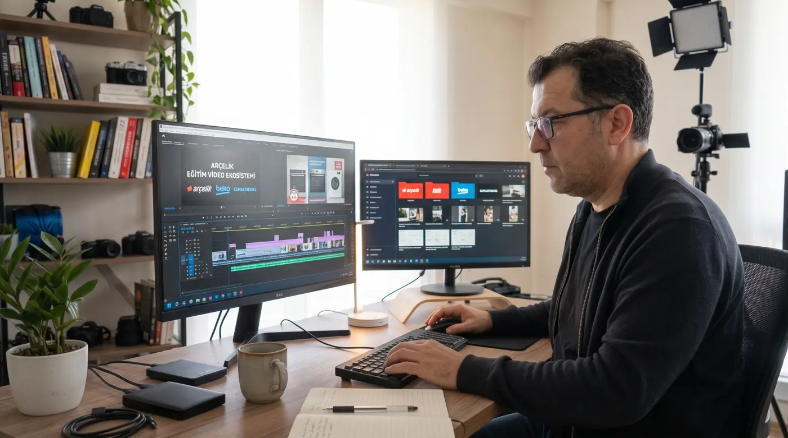
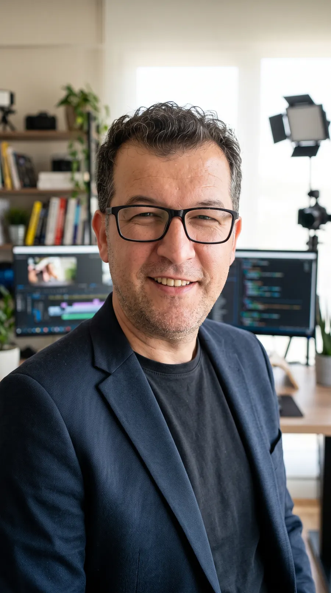
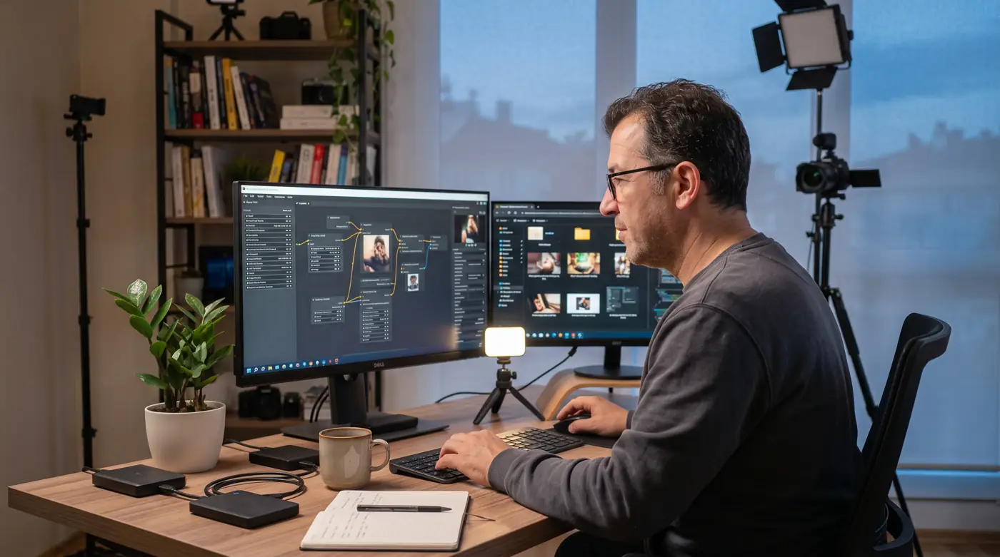
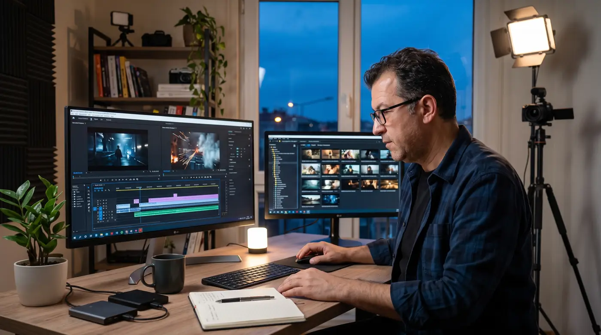
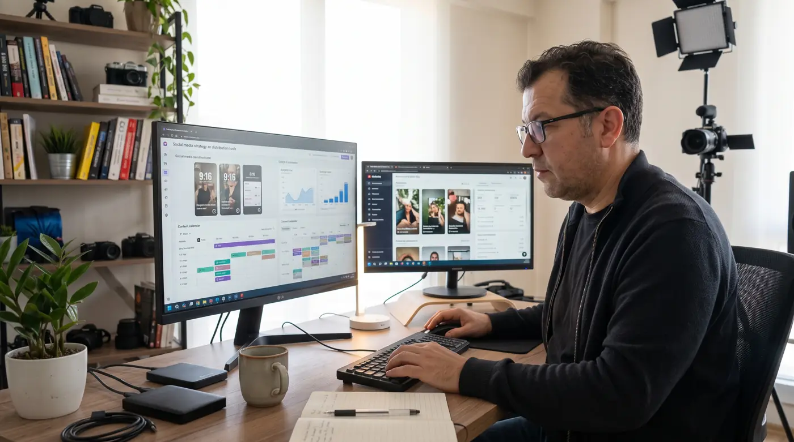
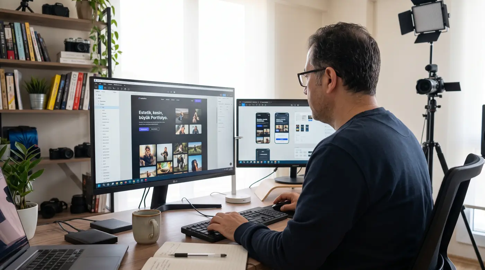

Kurumsal · Video
Arçelik, Beko, Grundig ürün eğitim videoları
Senaryodan çekime, Premiere Pro ve Final Cut ile kurguya, Synthesia ile yapay zekâ avatarlı eğitim videolarına kadar uçtan uca üretim ve son kullanıcıya ulaştırma.
Yeni projelere ve iş birliklerine açığım
Ben Samet. İşim video prodüksiyonu: kurumsal eğitim videolarını senaryodan çekime, Premiere Pro ve Final Cut ile kurguya kadar üretiyorum. Bir yandan da açık kaynak yapay zekâ modelleriyle evdeki bilgisayarımda görsel, video ve kendi araçlarımı üretiyor; öğrendiklerimi Instagram ve YouTube'da paylaşıyorum.

Video prodüksiyon
Arçelik, Beko ve Grundig için ürün eğitim videoları üretiyorum. Senaryoyu yazıyor, çekimi yapıyor, kurguyu bitirip videonun izleyiciye ulaşmasını takip ediyorum.
İki dünya burada birleşiyor: kurgudaki tekrar eden işleri yapay zekâ ve kendi yaptığım araçlarla hızlandırıyorum.
Eğitim metni, çekim planı, stüdyo ve saha çekimleri.
Premiere Pro, Final Cut ve Movavi ile kurgu, ses ve renk düzenleme.
Sayı ve istatistik animasyonları, ikonlar; işim için kendi yaptığım yerel araçlarla.
Synthesia ile kamera karşısına geçmeden hızlı ve güncellenebilir eğitim içerikleri.
Kariyer
2020 — Günümüz Aktif görev
Arçelik – Beko – Grundig
Eğitim senaryolarının yazımı, stüdyo ve saha çekimleri, Premiere Pro, Final Cut ve Movavi ile kurgu, Synthesia ile yapay zekâ avatarlı eğitim videoları; videoların son kullanıcıya ulaştırılması ve takibi.
2025 — Günümüz Bağımsız
Kendi çalışmalarım
ComfyUI'da yerel ve bulut iş akışları; Flux2 ve Krea2 ile görsel, H3 (Hailuo) ve Seedance ile video üretimi. Kurgu işlerimi hızlandıran kendi yapay zekâ araçlarım ve Qwen ile metin otomasyonu.
2026 — Günümüz Bağımsız
Kendi çalışmalarım
Modern ve mobil uyumlu web arayüzleri; sosyal medya için video içerik üretimi ve çok kanallı paylaşım.
Çalışmalar

Kurumsal · Video
Senaryodan çekime, Premiere Pro ve Final Cut ile kurguya, Synthesia ile yapay zekâ avatarlı eğitim videolarına kadar uçtan uca üretim ve son kullanıcıya ulaştırma.

ComfyUI
Flux2 ve Krea2 ile, kendi ekran kartımda çalışan düğüm tabanlı iş akışları.

AI video
H3 (Hailuo), Seedance ve Wan ile kamera hareketi, ışık ve tutarlılık üzerine çalışmalar.

İçerik
Yapay zekâ üzerine kısa, net ve anlaşılır videolar.

Web
Bu site dahil, kodlama ajanlarıyla kurduğum sade ve hızlı sayfalar.
Yetenekler
İleri seviye kurgu, tempo, çoklu kamera ve şablon yapısı.
Manyetik zaman çizelgesi, renk düzenleme, hızlı teslimat.
Hızlı kurgu, eğitim içerikleri ve ekran kayıtları.
Ürün eğitim senaryoları, anlatım dili ve storyboard.
Stüdyo ve saha çekimleri, mikrofon ve ışık kurulumu.
Düğüm tabanlı görsel ve video iş akışları.
Kurumsal eğitim videoları ve çok dilli AI avatarlar.
Fotogerçekçi görsel üretimi, LoRA ve stil kontrolü.
Sinematik kamera hareketleri ve AI video üretimi.
Yerel ve bulut dil modelleriyle metin ve kod otomasyonu.
GPU bellek yönetimi, modelleri kendi makinemde çalıştırma.
Kullanıcı dostu, hızlı ve mobil uyumlu sayfalar.
Bileşen yapısı, etkileşimli paneller ve web siteleri.
Özel tasarım sistemleri, mobil düzenler ve koyu tema.
Kurgu işlerini hızlandıran kendi otomasyon araçlarım.
Arçelik, Beko, Grundig: üretim, onay, iletim ve takip.
Dikey video formatları, kitle etkileşimi ve paylaşım.
İzlenme oranları, geri bildirimler ve süreç iyileştirme.
Yapay zekâ
Kendi bilgisayarımda kurduğum, kullandığım ve üzerine içerik ürettiğim alanlar.
Ollama, DeepSeek, Qwen ve benzerleri. Hangi model 16 GB'a sığar, hangisi işe yarar, buluta ne zaman geçmek mantıklı?
ComfyUI, Flux, Wan ve diğerleri. Metinden görsele, görselden videoya ve sese kadar iş akışları.
Claude Code, Cursor ve benzerleri. Mühendis olmayan birinin gözünden, ajanlarla gerçek projeler çıkarmak.
Kurulumdan ilk sonuca kadar adım adım. Çalışan dosyalar, gereksiz teori yok.
İletişim
Video prodüksiyon, eğitim videosu, yapay zekâ iş birliği ya da sadece bir soru. Formu doldurun, mesajınız doğrudan bana ulaşsın.